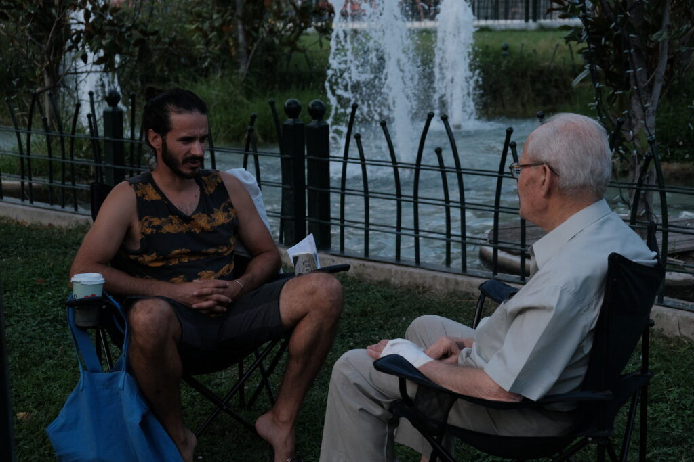
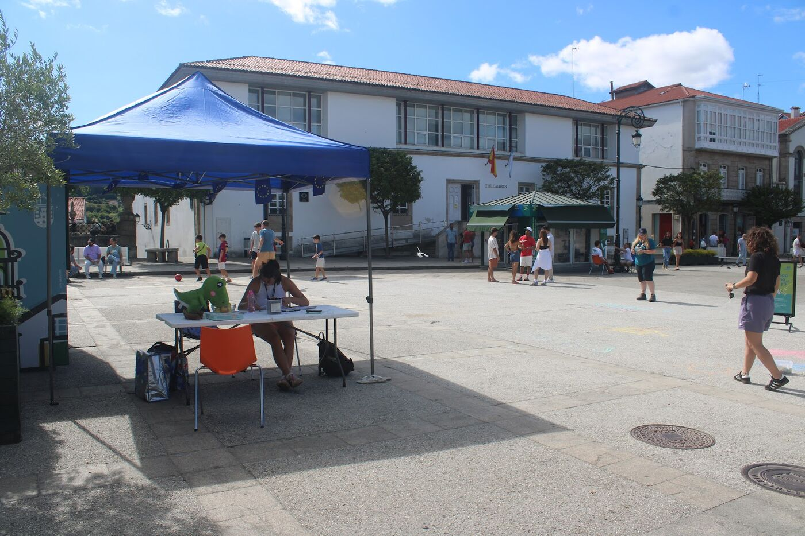
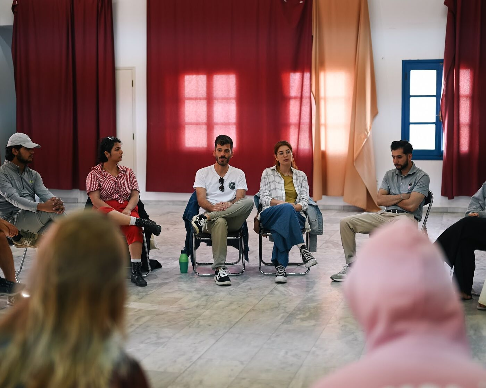
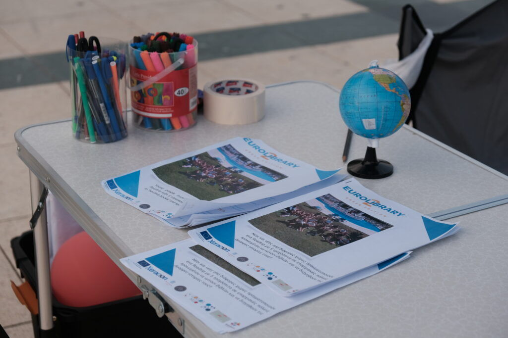

The Human Library guide
What a Human Library is, why it works and how to organise one, step by step. We learned it by running twenty of them across five countries, and we wrote down everything we would have liked to know on day one.

You borrow a person, not a book
You walk into a library. Instead of borrowing a book, you borrow a person. They tell you a story, their story: raw, real and often misunderstood.
The Human Library is a method that creates a safe space for dialogue between people who would not normally meet. It uses the metaphor of a library: the books are people, the readers are the public, and a loan is a conversation. It challenges prejudice by replacing assumptions with a real person, and asks nothing of readers except that they listen.
Where it comes from
The first Human Library took place in 2000 at a music festival in Denmark, promoted by an anti discrimination association. Festival goers could sit down between concerts with people who were usually labelled by others, and the idea spread. In 2003 the Council of Europe backed the method, and Human Libraries have since been organised on every continent.
What it is for
- Building empathy between strangers.
- Breaking stereotypes through contact and dialogue.
- Giving people a voice about their own experience.
- Practising listening without assumptions.
"It is not about agreeing. It is about understanding."
The rules of the library
They are close to the rules of a real library, and they keep everyone safe.
- 1
Timed loans
A loan lasts around 20 to 30 minutes, and never more than 30. It can end earlier.
- 2
Register first
Readers sign in at reception, receive the instructions and accept them explicitly.
- 3
Your own story
Books speak from the "I". No generalisations, no apologies and no attempt to convince.
- 4
The right to say no
A book can skip any question and end the loan if the conversation goes somewhere unwanted.
- 5
Two readers at most
To keep it a conversation and not a lecture, no more than two readers per book at once.
- 6
Return it with care
Readers hand the book back as they found it: treated with courtesy, kindness and confidentiality.
Roles and spaces
Every Human Library needs five roles and three spaces. Pick a role to see what it does.
A person who shares a part of their life
A book is a person who, for some reason, is labelled or stereotyped by society and who chooses to tell their own story honestly. Books speak in the first person, without generalising and without trying to convince anyone. Each one writes a short review for the catalogue.
Tip. A book always keeps the right to skip a question or to end a loan.
A curious member of the public
Readers register at reception, accept the rules and borrow one or more books. They come to listen and to ask honest, respectful questions, not to debate.
Tip. Come curious and leave the arguments at the door.
The organiser and master of ceremonies
Librarians build the spaces, welcome readers, explain the rules and hand out the catalogue. They introduce each reader to a book, time every loan, keep count of who was borrowed and make sure everybody feels comfortable.
Tip. Keep an eye on the reading space without listening in.
An interpreter for the conversation
When a book and a reader do not share a language, or when one of them is deaf, an interpreter joins the loan. In the Human Library they are called dictionaries.
Tip. If your audience is multilingual, line up your dictionaries early.
The people who bring readers in
In a public space nobody is guaranteed to walk in. Promoters invite passers by and explain the idea in an original and playful way. They also keep children busy, for example with face painting, while their parents read.
Tip. Flash mobs, free hugs and paper arrows pointing the way all work.
Three spaces
A reader walks through them in order.
Reception
Where readers arrive
An info desk staffed by at least one librarian. Readers register, accept the rules and receive the up to date catalogue.
Bookshelf
Where books wait
A calm, separate corner where books relax between loans until a librarian calls them. Keep it out of earshot of the reading space.
Reading space
Where loans happen
Tables or armchairs, coffee and snacks to invite dialogue, and paper tablecloths for notes and doodles.
How a loan works
From the moment a reader arrives to the moment the book goes back on the shelf. Click through the eight steps.
Step 1 of 8
Welcome
A reader arrives at reception. The librarian greets them, explains the rules and asks them to register and accept them.
Loan timer
Librarians keep the time. Pick a length and press start.
20:00
Organise yours
A checklist built from how we prepared each Eurolibrary mobility. Tick things off as you go: your progress stays in this browser.
Where and when
Choose a place where people already walk by: a square, a school, a library, a community centre or a café. Indoors is safer if the weather is unpredictable. An event can be open to the public or by invitation. Plan about two hours of loans, and start setting up at least three hours before.
What you need
- Coloured paper and flipcharts
- Markers, pens, scissors and tape
- Badges or T-shirts for each role
- Tables and chairs
- Paper tablecloths to write on
- Printed catalogue and a QR code
- Signs, posters or a roll up banner
- Snacks, coffee and water
- A timer
- A sign in sheet

Write a book
Every book has a title and a short review, like the back cover of a real book. It is the appetizer that helps readers choose.
Find your story
You do not need a dramatic story, just one you are happy to share. Choose a part of your life, not all of it, and decide in advance what you will not talk about.
- How do you define yourself, and what do others say about you?
- Which part of your life or work do you want to talk about?
- Which challenges have you overcome, at school, at work or with others?
- What have you done that might surprise people?
Review builder
Write your review below. Aim for 50 to 150 words.
0 words
Keep it safe
The method works because people feel safe. Safety is not a side note, it is the job.
Agree the ground rules
Co create group agreements before anything else: respect, confidentiality, punctuality and support. What is said in the reading space stays there.
Know your limits
Books choose what to share and what to keep. Practise the story with peers first, and agree what you will do if a question goes too far.
Look after each other
Form small reflection groups of four or five, a kind of project family. They are the people you can go to when a story stirs something up.
- Keep a librarian within sight of every reading table.
- Give books a quiet place to rest and to talk after a hard loan.
- Ask for consent before taking photos or recordings, and before collecting contact details.
Measure the impact
A Human Library changes minds quietly, so give yourself a way to see it.
Keep count
Note each loan and which book it was. It shows which stories reach people and when books need a rest.
Ask and keep in touch
Ask for a short evaluation. With explicit consent, collect an email so readers can follow the project and receive videos and podcasts afterwards.
Reflect and improve
Use the last day for reflection and feedback forms. Write down what to change next time.
In Eurolibrary
Each of the five mobilities ran at least four Human Libraries, on trains, ferries, in squares, in museums, in cafés and in local schools.
Prepared together
A full group meeting three weeks before, team meetings two weeks before and the catalogue closed a week ahead, with a title and a teaser for every story.
Built on the first day
Ice breakers, group agreements and small reflection groups came first. The Human Libraries filled days two to five.
Always something to do
While some participants were books, others ran games, promoted the event and filmed short videos, so everybody had a role.


Questions we are often asked
Do I have to belong to a minority to be a book?
No. Books are people with a story to share, often because they are labelled or stereotyped, but also because they have lived something others rarely hear. What matters is that they are willing to speak honestly about their own experience.
How long should a loan last?
Around 20 to 30 minutes works well, and it should never go over 30. A conversation can always end earlier. Fix the duration before the event and let the librarians keep time.
How many books do we need?
A small library needs at least six, so readers have a real choice. With more books, each one gets time to rest between loans.
Can we run one in a school?
Yes. Eurolibrary held sessions in local schools, where students heard stories straight from the people who lived them. Agree the format with the teachers beforehand, keep groups small and make sure a librarian is always nearby.
What if a reader asks something too personal?
The book can decline to answer or end the loan at any time, and does not have to explain why. The librarian can step in and offer the reader another book.
What about languages?
Choose a shared language for the event. If a book and a reader do not share one, or one of them is deaf, bring in a dictionary to interpret.
Can we take photos or recordings?
Only with the consent of everyone who appears or speaks. Ask for it at registration, and do not collect readers' emails without their agreement.
Where do we start?
The Human Library Organisation, which started the method, shares resources and guidance at humanlibrary.org. Check their advice on how to present your event before you announce it.
Ready to open your own library?
Start with the checklist, or tell us what you are planning. We are glad to help.